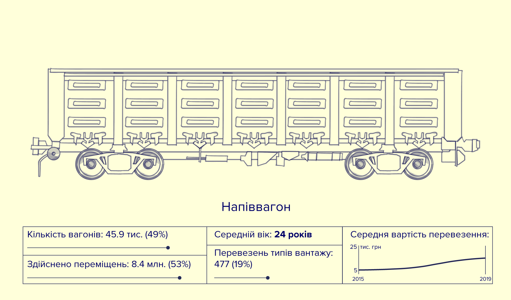
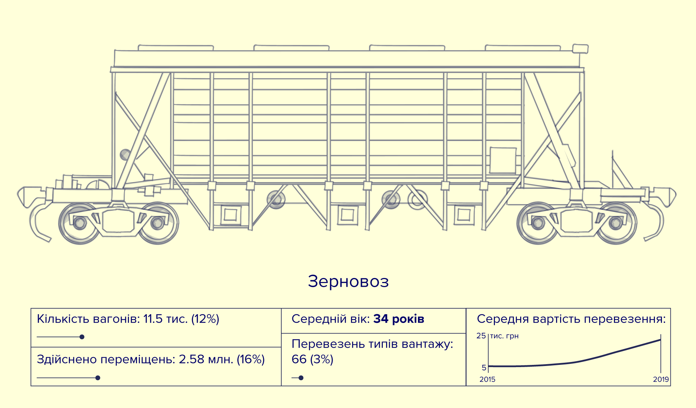
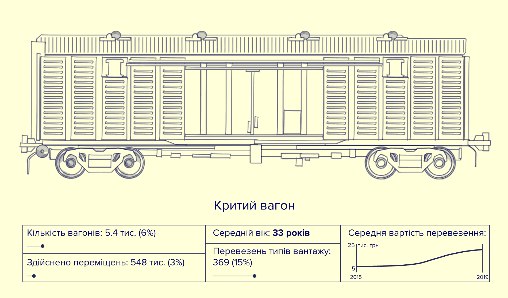
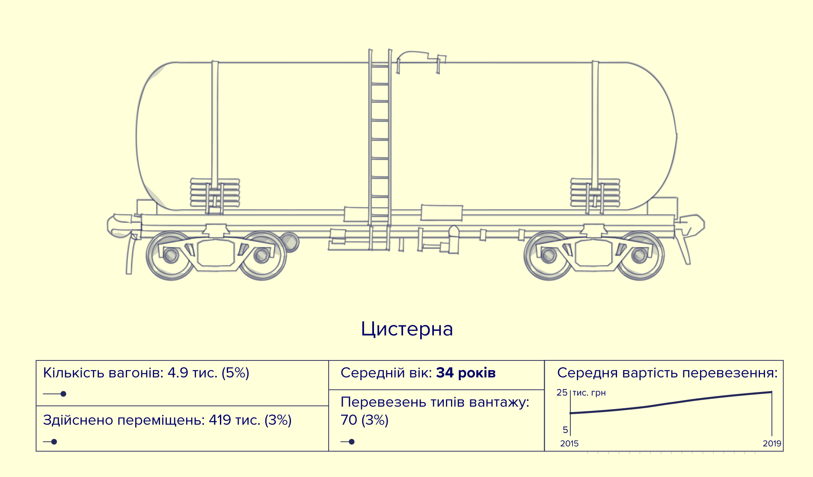
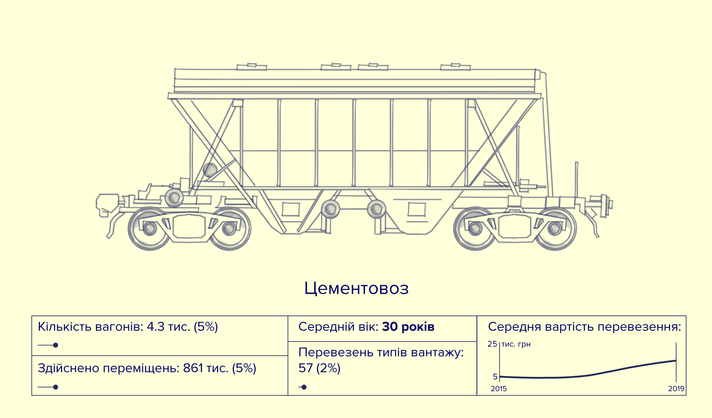
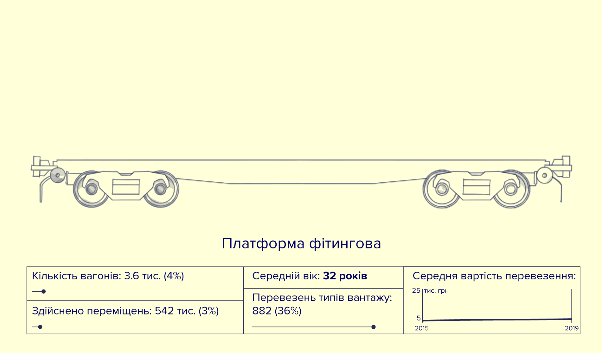
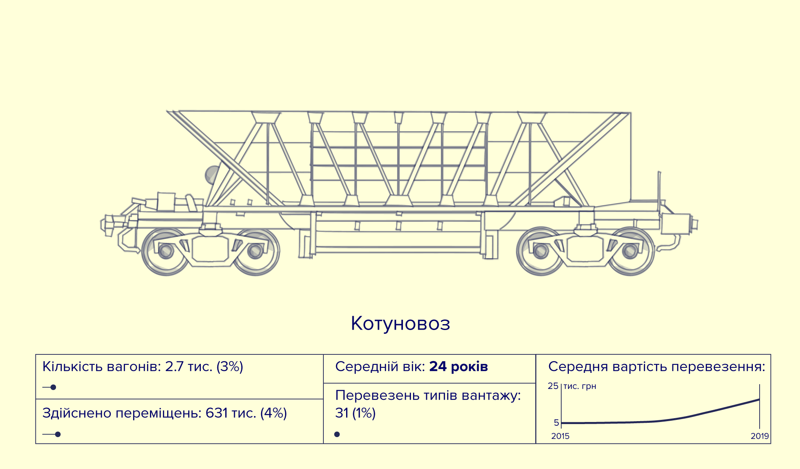

Що можуть
розповісти
відкриті дані
про роботу
Укрзалізниці
Акціонерне товариство «Українська залізниця» (далі УЗ) є державним
монополістом в галузі залізничних вантажних перевезень. За
інформацією самої компанії, УЗ забезпечує понад 80% перевезень
в країні. Транспортна мережа УЗ є однією з найбільших на материку
та зручно поєднує Україну не тільки з Європою, але й з усім світом,
забезпечуючи вихід до цілого куща морських портів Причорномор’я
та Приазов’я.
Ключові моменти:
Щебінь гранітний, зерно кукурудзи, Не існує прямої залежності між Через низьку швидкість вагонів
пшениця, залізнорудний концентрат
та котуни, а також газове вугілля є швидкістю руху вагонів на маршруті
та отриманою тарифною платою за близько половини всіх перевезень
здійснюється із значними затримками.
основними вантажами УЗ.
Через монопольне становище УЗ, українські підприємці змушені цілковито
покладатися на компанію в наданні залізничної тяги. Трохи меншою є залежність від
оренди вантажних вагонів, проте й тут парки приватних компаній-перевізників не
можуть і близько рівнятися з кількістю вантажних вагонів під орудою УЗ. Однак, УЗ є
досить непрозорою компанією, і через це, її цінові політики та загальна якість послуг
вже не перший рік викликають нарікання бізнесу. Ми вирішили дослідити як працює
компанія і за допомогою аналізу відкритих даних показати, якою є середня швидкість
руху вагонів УЗ та де виникають найбільші затримки перевезень.
Загалом, ми проаналізували близько 16 млн. записів про переміщення окремих
вантажних вагонів, що відбувалися в період з вересня 2015 по листопад 2019. Ці дані
свідчать про наявність у парку УЗ щонайменше 94 312 вагонів, котрі розподіляються
на понад 16 родів рухомого складу. Найбільше всього напіввагонів (бл. 46 тис., 49%)
та зерновозів (11.5 тис., 12%). Сумарно ці роди вагонів здійснили понад 10 млн.
переміщень, і через це були найбільш затребуваними на залізниці. Значна частка
переміщень припала також на платформи фітингові, цементовози, котуновози,
цистерни та криті вагони. Напіввагони найчастіше використовували для перевезення
залізорудного концентрату (гематиту), однак ці вагони є досить універсальними,
оскільки вони були задіяні у перевезеннях понад 450 інших типів вантажів. Зерновози
належать до спеціалізованих вагонів. Найчастіше їх використовували для перевезення
зерна кукурудзи, а окрім цього вони перевозили лише 59 інших типів вантажів.
Найбільш універсальним родом вагонів є платформи фітингові. Ними перевезли аж 877
різних типів вантажів, що становить понад третину від усієї вантажної номенклатури УЗ
за період 2015-2019 рр.
Переважна більшість вагонів в парку УЗ служить ще з середини 1980-х років та має
середній вік близько 30-35 років. Варто зазначити, що під кінець 2000-х та у 2017-2018
роках УЗ дещо оновила свій парк за рахунок закупки напіввагонів та котуновозів, і тому
середній вік цих родів вантажних вагонів є значно нижчим – 24 роки.
Типи вагонів

Котуновоз
Кількість вагонів: 2.7 тис. (3%)
Здійснено переміщень: 631 тис. (4%)
Середній вік: 24 років
Перевезень типів вантажу: 31 (1%)
Середня вартість перевезення:

Котуновоз
Кількість вагонів: 2.7 тис. (3%)
Здійснено переміщень: 631 тис. (4%)
Середній вік: 24 років
Перевезень типів вантажу: 31 (1%)
Середня вартість перевезення:

Котуновоз
Кількість вагонів: 2.7 тис. (3%)
Здійснено переміщень: 631 тис. (4%)
Середній вік: 24 років
Перевезень типів вантажу: 31 (1%)
Середня вартість перевезення:

Котуновоз
Кількість вагонів: 2.7 тис. (3%)
Здійснено переміщень: 631 тис. (4%)
Середній вік: 24 років
Перевезень типів вантажу: 31 (1%)
Середня вартість перевезення:

Котуновоз
Кількість вагонів: 2.7 тис. (3%)
Здійснено переміщень: 631 тис. (4%)
Середній вік: 24 років
Перевезень типів вантажу: 31 (1%)
Середня вартість перевезення:

Котуновоз
Кількість вагонів: 2.7 тис. (3%)
Здійснено переміщень: 631 тис. (4%)
Середній вік: 24 років
Перевезень типів вантажу: 31 (1%)
Середня вартість перевезення:

Котуновоз
Кількість вагонів: 2.7 тис. (3%)
Здійснено переміщень: 631 тис. (4%)
Середній вік: 24 років
Перевезень типів вантажу: 31 (1%)
Середня вартість перевезення:
Найбільш завантажені напрямки
Всього у транспортній мережі УЗ було задіяно близько 1200 вантажних станцій.
В структурі мережі чітко прослідковується кілька великих вузлів, що здійснюють
переміщення найбільшої кількості вагонів (Рис. 2). По-перше, це Криворізький
залізничний вузол, що сполучається з припортовими станціями поблизу Одеси,
Миколаєва, а також із металургійними підприємствами Маріуполя. Крім цього, цей
вузол також тісно пов’язаний з експортними залізничними переходами на заході країни
та іншими меншими залізничними вузлами (напр. Запорізьким). Окремо варто виділити
Одесько-Миколаївський припортовий кущ станцій, котрий сполучається фактично з
усією Україною. Цікавою є і внутрішня залізнична мережа Донбасу. Це велика кількість
окремих станцій, поміж якими курсує чимало вантажних вагонів. Також, доволі
завантаженими є напрямки, що сполучають станції-обслуговувачі великих кар’єрів
(Гранітний, Клесів, Редути) із вантажними станціями Києва, Львова, Харкова.
Сто найбільш завантажених (за к-стю переміщених вагонів) напрямків вантажних перевезень УЗ.
Ми вирішили перевірити наскільки залежить швидкість руху вагонів
на маршруті від його вантажообігу1 або розміру тарифної плати за
перевезення (Рис. 8). Досить очікуваною є пряма залежність між
вантажообігом та вартістю перевезення. Проте водночас, цей графік
показав фактичну відсутність будь-якої залежності між швидкістю
руху вагонів, виставленою тарифною платою та вантажообігом.
Дивно, однак виявляється, що на чималій кількості напрямків
вантажообіг та тарифна плата є досить високими, а швидкість руху
вагонів – низькою.
Експерт Центру Транспортних Стратегій Андрій Шкляр пояснює,
що швидкість руху вагонів значною мірою залежить від кількості
задіяних на маршруті локомотивів. За його словами, УЗ більш
зацікавлена першочергово надавати їх тим відправникам, котрі
можуть гарантувати найбільш стабільний та передбачуваний
транспортний потік. Не останню роль відіграє також і під’їздна
інфраструктура станції-відправника. Наприклад, сучасніші елеватори
можуть одночасно завантажувати більшу кількість вагонів, генеруючи
стабільніші відправки. Та якщо загальний стан інфраструктури бізнес
ще може покращити за рахунок власних інвестицій, то проблеми з
локомотивами є набагато глибшими та важчими для вирішення.
Наявні відкриті дані свідчать про щонайменше 2 тисячі вантажних
локомотивів у парку УЗ, проте вони не дають встановити ані їх
технічного стану, ані на яких напрямках вони використовуються. Хай
там як, але жалюгідний стан локомотивного парку УЗ ні для кого не є
секретом, ба навіть й саме товариство погоджується з цим. Середній
вік переважної більшості локомотивів на залізниці вже давно
перевалив за граничний термін експлуатації 30 років та становить
близько 35-40 років. Впродовж останніх років УЗ намагалась
вирішити ці проблеми за допомогою закупки нових локомотивів у
західних компаній. Так, впродовж 2018-2019 років в експлуатацію
було введено 30 тепловозів виробництва General Electric. Однак,
такий шлях є надто витратним для вже збиткової УЗ, а тому потрібно
шукати системніших рішень для покращення якості роботи залізниці
– наприклад, запровадження приватної тяги. З великою ймовірністю,
ця інновація могла б суттєво зменшити тривалість подорожі вантажних
вагонів та забезпечити швидкі перевезення для всіх гравців ринку, а
не лише для окремих «VIP-відправників» руди та зерна.
Найбільші станції-відправники основних груп вантажів з вересня 2015 рр. по листопад 2019 рр.
Зернові найбільше відправляють із центру України, а майже всі станції-відправники
залізнорудного концентрату та котунів розташовані в межах Дніпропетровської та
Запорізької областей. Кам’яне вугілля переважно відправляють з Донбасу, але також із
двох станцій поблизу Червонограда Львівської області. Переважна більшість станцій-
відправників гранітної крихти, щебню та інших будівельних матеріалів розташована
чітко в межах Українського кристалічного щита, що простягається вздовж середньої
течії Дніпра. Цікавою є роль припортових станцій поблизу Одеси, адже через них до
України потрапляє чимало імпортованого вугілля та руд кольорових металів.
Залізнорудний концентрат та котуни
Медіанна тривалість усіх переміщень вагонів УЗ (як навантажені, так і порожні вагони)
становила 3 дні, а переважна більшість переміщень вагонів тривала близько 8 днів.
А втім, майже 1 мільйон переміщень зайняв значно довше 8 днів. Згідно «Правил
обчислення доставки вантажів» швидкість переміщення вагонів повинна становити
від 200 (відправка окремими вагонами) до 320 (відправка цілими потягами) км/добу.
Застосування цих правил до відомостей про перевезення 2015-2019 рр. показує, що
43% вагонних відправок та 24% маршрутних відправок потягами не було виконано
вчасно. Найбільша кількість затримок виникала по прибутті вагонів на припортові
станції Одещини та Миколаївщини, а також на залізничному переході Ізов, що сполучає
Україну з Польщею. В середньому, вагони, що запізнювались, долали близько 100 км
за добу. Це значно нижче за нормативні 200 або 320 км/добу, і тому призводило до
кількаденних затримок прибуття вагонів.
Водночас, в транспортній мережі УЗ існують напрямки за якими вагони рухались
набагато швидше за нормативні показники, а тому прибували на кілька днів раніше
очікуваного. Найбільше таких «швидких» перевезень відбувалось на напрямках, що
сполучали великі гірничо-збагачувальні комбінати із залізничними переходами на
західному кордоні України (Рис. 4).
Найшвидші та найповільніші напрямки перевезення залізнорудного концентрату та котунів (дрібні цятки – станції
прибуття, розмір більших цяток пропорційний до к-сті відправлених вагонів; зелений колір позначає маршрути на
яких вагони рухалися швидше, червоний – повільніше)
Маршрутна відправка
Вагонна відправка
Вугілля
Для вагонної відправки показані лише ті напрямки, за якими було відправлено більше
200 вагонів.
Значною також була кількість пришвидшених перевезень вугілля (Рис. 5). В основному,
такі перевезення сполучали шахти Донбасу з великими ТЕЦ і ТЕС (напр. Бурштинською,
Добротвірською, Ладижинською, Трипільською та іншими). Примітною також є і велика
кількість імпортованого вугілля, котре відправлялось із морських портів до великих
металургійних підприємств Донеччини, а також до окремих ТЕЦ у пришвидшеному
порядку.
Найшвидші та найповільніші напрямки перевезення різних марок вугілля (дрібні цятки – станції прибуття,
розмір більших цяток пропорційний до к-сті відправлених вагонів; зелений колір позначає маршрути на яких
вагони рухалися швидше, червоний – повільніше). Для вагонної відправки показані лише ті напрямки, за якими
було відправлено більше 200 вагонів. *Переміщення вагонів на території ОРДЛО припинилися після введення
«транспортної блокади» у березні 2017.
Маршрутна відправка
Вагонна відправка
Зернові
Відправлення більш-менш значних партій зерна кукурудзи та пшениці відбувалися
з широкої мережі станцій, котра охоплювала майже всю Україну (Рис. 6). В цілому,
середня швидкість руху зерновозів була більш-менш задовільною на більшості
напрямків. Проте, всі ці перевезення здійснювались у напрямку лише кількох
припортових станцій Одещини, Миколаївщини та Херсонщини. Вочевидь, саме це й
створювало значне навантаження на транспортну мережу та призводило до істотних
затримок доставки. А втім, в структурі перевезення зернових все одно існує чимало
напрямків, по яких вантажні вагони рухались набагато швидше від норм УЗ.
Найшвидші та найповільніші напрямки перевезення різних марок вугілля (дрібні цятки – станції прибуття, розмір більших цяток пропорційний до к-сті відправлених вагонів; зелений колір позначає маршрути на яких вагони рухалися швидше, червоний – повільніше). Для вагонної відправки показані лише ті напрямки, за якими було відправлено більше 200 вагонів. *Переміщення вагонів на території ОРДЛО припинилися після введення «транспортної блокади» у березні 2017.
Маршрутна відправка
Вагонна відправка
Щебінь, пісок та інші будівельні матеріали
На противагу цьому, майже 100% перевезень щебню та інших будівельних матеріалів
відбувалися з істотними затримками (Рис. 7). І це не зважаючи на те, що ці вантажі за
обсягом посідають одне з найчільніших місць в структурі вантажних перевезень УЗ.
Найшвидші та найповільніші напрямки перевезення щебню, піску та інших будівельних матеріалів (дрібні цятки
– станції прибуття, розмір більших цяток пропорційний до к-сті відправлених вагонів; зелений колір позначає
маршрути на яких вагони рухалися швидше, червоний – повільніше). Для вагонної відправки показані лише ті
напрямки, за якими було відправлено більше 200 вагонів.
Медіана швидкості, км в день
Маршрутна відправка
Вагонна відправка
Співвідношення вантажообігу із вартістю
Ми вирішили перевірити наскільки залежить швидкість руху вагонів на маршруті
від його вантажообігу1 або розміру тарифної плати за перевезення (Рис. 8). Досить
очікуваною є пряма залежність між вантажообігом та вартістю перевезення. Проте
водночас, цей графік показав фактичну відсутність будь-якої залежності між
швидкістю руху вагонів, виставленою тарифною платою та вантажообігом. Дивно,
однак виявляється, що на чималій кількості напрямків вантажообіг та тарифна плата є
досить високими, а швидкість руху вагонів – низькою.
Експерт Центру Транспортних Стратегій Андрій Шкляр пояснює, що швидкість руху
вагонів значною мірою залежить від кількості задіяних на маршруті локомотивів. За
його словами, УЗ більш зацікавлена першочергово надавати їх тим відправникам, котрі
можуть гарантувати найбільш стабільний та передбачуваний транспортний потік. Не
останню роль відіграє також і під’їздна інфраструктура станції-відправника. Наприклад,
сучасніші елеватори можуть одночасно завантажувати більшу кількість вагонів,
генеруючи стабільніші відправки. Та якщо загальний стан інфраструктури бізнес
ще може покращити за рахунок власних інвестицій, то проблеми з локомотивами є
набагато глибшими та важчими для вирішення.
Наявні відкриті дані свідчать про щонайменше 2 тисячі вантажних локомотивів у парку
УЗ, проте вони не дають встановити ані їх технічного стану, ані на яких напрямках
вони використовуються. Хай там як, але жалюгідний стан локомотивного парку УЗ ні
для кого не є секретом, ба навіть й саме товариство погоджується з цим. Середній вік
переважної більшості локомотивів на залізниці вже давно перевалив за граничний
термін експлуатації 30 років та становить близько 35-40 років. Впродовж останніх
років УЗ намагалась вирішити ці проблеми за допомогою закупки нових локомотивів
у західних компаній. Так, впродовж 2018-2019 років в експлуатацію було введено 30
тепловозів виробництва General Electric. Однак, такий шлях є надто витратним для
вже збиткової УЗ, а тому потрібно шукати системніших рішень для покращення якості
роботи залізниці – наприклад, запровадження приватної тяги. З великою ймовірністю,
ця інновація могла б суттєво зменшити тривалість подорожі вантажних вагонів та
забезпечити швидкі перевезення для всіх гравців ринку, а не лише для окремих «VIP-
відправників» руди та зерна.
Співвідношення середнього вантажообігу на маршруті із середньою вартістю вантажного перевезення в період з
вересня 2015 по листопад 2019 рр.